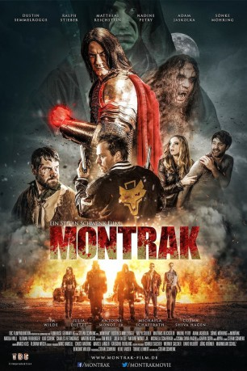

#10849 Montrak
 
 IMDB-Wertung: 5.8 / 10
IMDB-Wertung: 5.8 / 10  Metascore: 0
Metascore: 0 
Im finsteren Mittelalter wird Deutschland von Vampiren heimgesucht. Graf Montrak (Sönke Möhring), der seit dem Tod seiner Geliebten (Cosma Shiva Hagen) dem Bösen verfallen ist, wurde von Luzifer höchstpersönlich in einen Blutsauger verwandelt. Mit seinen Schergen treibt er im Schatten sein Unwesen, bis ihm eines Tages die Menschen auf die Schliche kommen. In der Hoffnung, Vampire wieder zum Mythos zu machen, lässt sich Montrak von diesen töten. Doch seine Untertanen (u.a. Adam Jaskolka) folgen nun einem neuen Anführer, den der Graf vor seinem Ableben bestimmt hat. In der Gegenwart bricht erneut die Zeit der Vampire an. Nur eine kleine Gruppe von Helden (u.a. Dustin Semmelrogge) stellt sich ihnen in den Weg.
Jahr: 2017
Dauer: 121 Minuten
FSK: 16
Land: Deutschland Studio: Nameless MediaTonspuren:
Untertitel:
Auflösung: 1080p (1920x1080) Größe: 8345 MB
Genre: Action, Horror, Fantasy
Regisseur: Stefan Schwenk
Drehbuch: Stefan Schwenk
Soundtrack: Myra
Darsteller:
 Sönke Möhring als Graf Montrak
Sönke Möhring als Graf Montrak Nikolai Will als Mario
Nikolai Will als Mario- Florian Freiberger als Caspar
- Charles Rettinghaus als Winnie
 Tim Wilde als Abgeordneter Kuhn
Tim Wilde als Abgeordneter Kuhn Julia Dietze als Tanja
Julia Dietze als Tanja Antoine Monot Jr. als Mönch
Antoine Monot Jr. als Mönch- Michaela Schaffrath als Dr. Heusmann
- Cosma Shiva Hagen als Gräfin Sofia
- Andreas Schlee als Harrys Komplize #1
- Stefan Schwenk als Tankstellenverkäufer
 Steffen Jung als Vampirwächter
Steffen Jung als Vampirwächter- Dustin Semmelrogge als Harry
- Ralph Stieber als Frank
- Matthias Reichstein als Wilhelm
- Nadine Petry als Nicki
- Adam Jaskolka als Wladislaw
- Udo Schenk als Kilian
- Martin Kesici als Neuer Vampirmeister
- Nadine Badewitz als Elisabeth
- Martin Helstone als Buddy
- Stephanie Jost als Susann
- Sabine Kaack als Franks Mutter
- Martin Walde als Jens
- Heinz Petri als Gottfried
- Shirin Havaei als Caspars Gangmitglied #1
- Claudia Pütters als Caspars Gangmitglied #2
- Christoph Hübner als Caspars Gangmitglied #3
- Daniel Hacker als Caspars Gangmitglied #4
- Wesley Howard als Harrys Komplize #2
- Florian Dietel als Heiko
- Bernhard Jünemann als Moderator
- Mika Metz als Vampir im Hohen Rat
- Gunter Bender als Jeronimus
- Jan Terstiege als Verbrannter Vampir
- Günther Brenner als Dorf-Peiniger
- Matthias Hofmann als Jeronimus Gefährte #1
- Berndt Scholz als Jeronimus Gefährte #2
- Ralf Ahlborn als Wirt
- Nicole Hickel als Sexy Ladies #1
- Chanté Metz als Sexy Ladies #2
- Ekaterina Haas als Sexy Ladies #3
- Kerstin Grüner als Sexy Ladies #4
- Matthias Vondran als Vampir mit Handgranate
- Michael Pöhlmann als Jens' Freund
- Alexander Krenz als Vampirkämpfer #1
- Michael Habermeier als Vampirkämpfer #2
Datei: X:\2017(G-M)\Montrak (2017, FSK16, 1920x1080).mkv seit 10.03.2019
Festplatte: HD 2017(A-Z)-2018(A-F)
 Es gibt insgesamt 148 Filme in der Gruppe '2017(G-M)'
Es gibt insgesamt 148 Filme in der Gruppe '2017(G-M)'